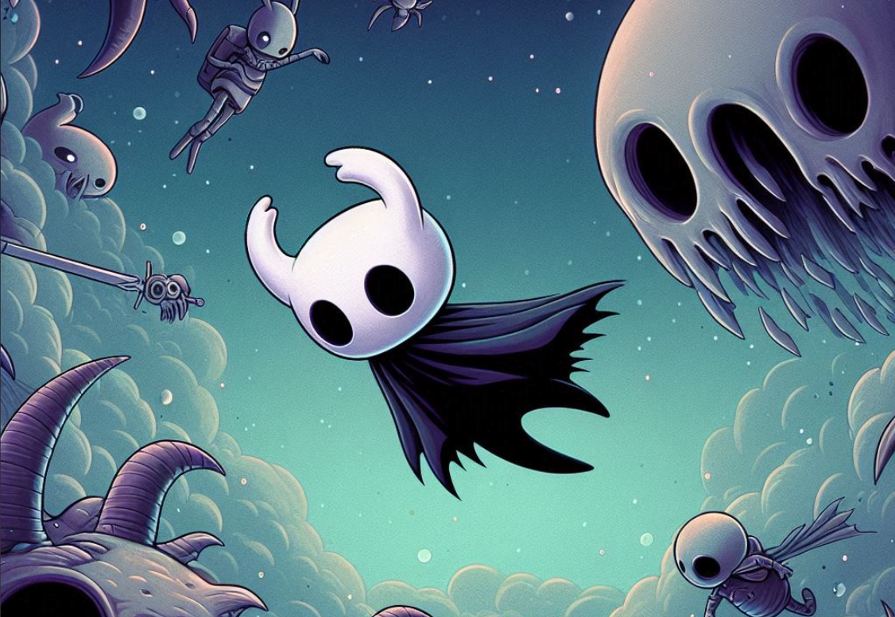

Anteproyecto Somnium
Daniel Oquendo - Santiago Zapata
1. ¿Cuál es el objetivo general del proyecto de interacción digital?
Mostrar y explorar teorías del sueño: Crear un videojuego 2D estilo metroidvania que integre conceptos y teorías sobre los sueños y el inconsciente. El juego tiene como objetivo proporcionar una representación interactiva y reflexiva de cómo los sueños pueden reflejar aspectos profundos del psiquismo humano, contribuyendo al conocimiento y comprensión de estos temas en el contexto del videojuego.
2. ¿Cuál es el público objetivo o usuarios finales del proyecto?
El público objetivo del videojuego es desde la adolescencia hasta la adultez temprana (16 - 33 años).
3. ¿Cuál es el problema o necesidad que el proyecto abordará?
El proyecto aborda la falta de reconocimiento del impacto de los sueños en la vida emocional, busca mostrar cómo los sueños reflejan aspectos profundos del subconsciente, integrando teorías del sueño y el inconsciente en la narrativa para crear una experiencia que conecta la psicología con el desarrollo de videojuegos, y presenta una herramienta innovadora que fomenta la reflexión sobre los procesos emocionales y psicológicos.
4. ¿Cuáles son los objetivos específicos del proyecto? ¿Qué resultados esperas lograr?
- Desarrollo en Unity: Aprender y aplicar herramientas de Unity para desarrollar mecánicas de juego, diseño de niveles y gestión de recursos. Implementar sistemas como el combate, exploración y santuario especial.
- Diseño y Modelado en Blender: Crear activos visuales en Blender y desarrollar cinemáticas interactivas que complementen la narrativa.
- Programación Orientada a Objetos y Desarrollo de Juegos: Aplicar principios de OOP en la creación de clases y objetos, desarrollando sistemas de juego escalables y modulares.
- Investigación y Aplicación de Teorías Psicológicas: Investigar y aplicar teorías del sueño y el inconsciente en la narrativa y diseño del juego para enriquecer la experiencia del jugador.
5. ¿Cuál es la temática o contenido central del proyecto?
El juego está inspirado en las teorías de Sigmund Freud, Carl Jung y otros psicólogos que han estudiado los sueños y su relación con el inconsciente. Explora los sueños como expresiones de deseos reprimidos y conflictos internos, incorporando arquetipos y símbolos universales. Los jugadores navegarán por un mundo onírico que refleja emociones profundas, miedos y deseos, en busca de sanación emocional y autoconocimiento.
6. ¿Qué tipo de interacción se planea implementar?
Cinemáticas, jugabilidad y sus ramas, puzzles, e investigación del mapa para obtener ventajas.
7. ¿Qué plataformas o dispositivos se utilizarán para la interacción?
El juego se desarrollará en PC utilizando Unity, con soporte para teclado y control.
8. ¿Cómo se estructurará la navegación y la arquitectura de la información?
Menú Principal: Inicio, Opciones, Cargar Partida, Créditos.
Selección de Niveles: Acceso a diferentes niveles o zonas del juego a través de portales.
Navegación In-Game: HUD minimalista, interacción contextual, y acceso a un "Diario de Sueños".
Transiciones y Flujo: Transiciones fluidas entre cinemáticas, combates, y exploración, con puntos de control estratégicamente ubicados.
9. Recursos Disponibles
Personal: Dos personas: una en programación y Unity, otra en modelado y animación con Blender.
Tiempo: Aproximadamente 3 meses para el desarrollo del juego completo.
Presupuesto: Aproximadamente 100 mil COP para addons, software o assets de pago.
Equipo y Herramientas: Dos portátiles, tabletas gráficas, y software como Unity y Blender.
Conocimiento y Habilidades: Conocimientos básicos en programación, modelado, animación 3D, y uso de Unity y Blender.
10. ¿Cómo se medirá el éxito del proyecto?
Ganar el Pitch o las Colegiadas, llegar el vento de las Colegiadas, encuestas al público, publicación en Steam, y crecimiento en redes sociales como Instagram y X.
Descargar Anteproyecto en PDF
Descarga el archivo PDF del anteproyecto desde el siguiente enlace:
Descargar Anteproyecto PDF Página principal